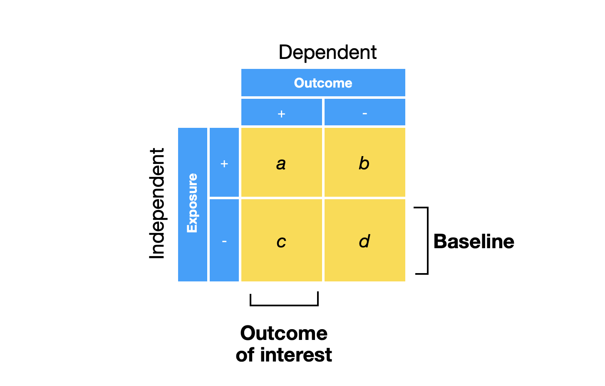

1. Descriptive tables#
1.1. Statistical table#
Convenience function
print_html
print_html <- function(input) {
capture.output(input) %>%
paste(collapse="") %>%
IRdisplay::display_html()
}
Table (no grouping)
library(gtsummary)
data %>% select(_____,_____,_____) %>%
tbl_summary(statistic = all_continuous() ~"{mean} ({sd})") %>% print_html
Table (split by group)
library(gtsummary)
data %>% select(_____,_____,_____) %>%
tbl_summary(by = _______, # grouping variable
statistic = all_continuous() ~"{mean} ({sd})") %>% print_html
2. Statistical tests and plotting#
4.1. Comparing counts 2x2#
4.1.1. Fisher’s Exact Test#
small numbers
2x2 table
Preparation#
Convenience
print_tablefunction
print_table <- function(input, margin=F) {
input <- htmlTable::txtRound(input,1)
if (margin == T) { input <- addmargins(input)}
input %>%
htmlTable::htmlTable(css.rgroup = "font-weight: 900; text-align: left;") %>%
IRdisplay::display_html()
}
Format table

library(tidyverse)
table_name <- data %>%
select(__exposure__, __outcome__) %>%
mutate(__exposure__ = fct_relevel(__exposure__, "+","-"),
__outcome__ = fct_relevel(__outcome__, "+","-")) %>%
table
print_table(table_name)
Plotting#
library(tidyverse)
# set plot dimensions e.g. 10, 10
options(repr.plot.width=__, repr.plot.height=__)
data %>% ggplot(aes(x=__exposure__,fill=__outcome__)) +
geom_bar(position="fill") +
theme_grey(base_size=_____) # size of plot e.g. 16
Statistical test#
Fisher’s exact test
table_name %>% rstatix::fisher_test(detailed=T)
Effect size (odds ratio)
epitools::oddsratio(table_name, rev="both")$measure
4.2. Comparing counts RxC#
4.2.1. Chi-squared test#
R X C
large counts
Preparation#
Convenience function
print_table
print_table <- function(input, margin=F) {
input <- htmlTable::txtRound(input,1)
if (margin == T) { input <- addmargins(input)}
input %>%
htmlTable::htmlTable(css.rgroup = "font-weight: 900; text-align: left;") %>%
IRdisplay::display_html()
}
Format table
table_name <- data %>%
select(__exposure__, __outcome__) %>%
table
print_table(table_name)
Statistical plotting#
library(ggstatsplot)
# set plot dimensions e.g. 10, 10
options(repr.plot.width=__, repr.plot.height=__)
table_name %>% ggbarstats(x = __exposure__,
y = __outcome__) +
theme_grey(base_size=16)
Effect size (Cramer’s V)
ES <= 0.2 - weak
0.2 < ES <=0.6 - moderate
ES > 0.6 - strong
5.1. Correlating 2 measures#
5.1.1. Parametric (Pearson’s correlation)#
library(ggstatsplots)
# set plot dimensions e.g 10, 10
options(repr.plot.width=__, repr.plot.height=__)
data %>% ggscatterstats(x = ______, # measure 1
y = ______, # measure 2
marginal = FALSE) + # suppress marginal plot
theme_grey(base_size=__) # size of plot e.g. 16
Effect size ®
r<0.05 - Tiny
0.05<=r<0.1 - Very small
0.1<=r<0.2 - Small
0.2<=r<0.3 - Medium
0.3<=r<0.4 - Large
r>=0.4 - Very large
5.1.2. Non-parametric (Spearman’s correlation)#
library(ggstatsplots)
# set plot dimensions e.g 10, 10
options(repr.plot.width=__, repr.plot.height=__)
data_mz %>% ggscatterstats(x = ______, # measure 1
y = ______, # measure 2
type = "nonparametric" # non-parametric spearman's
marginal = FALSE) + # suppress marginal plot
theme_grey(base_size=__) # size of plot e.g. 16
Effect size (rho)
r<0.05 - Tiny
0.05<=r<0.1 - Very small
0.1<=r<0.2 - Small
0.2<=r<0.3 - Medium
0.3<=r<0.4 - Large
r>=0.4 - Very large
3. Statistical modeling#
3.1. Build model#
Continuous outcome (e.g. BP, heart rate, glucose)
model <- lm(__response__ ~ __covariate1__ + __covariate2__, # selected covariates
data)
model <- lm(__response__ ~ . , # all covariates
data)
Binary outcome (e.g. disease/no disease, alive/dead)
model <- glm(__response__ ~ __covariate1__ + __covariate2__, # selected covariates
data,
family="binomial")
model <- glm(__response__ ~ ., # all covariates
data,
family="binomial")
3.2. Check collinearity#
library(tidyverse)
model %>% car::vif() %>%
bind_rows %>%
pivot_longer(cols = everything(),
names_to="covariate",
values_to = "VIF") %>%
ggplot(aes(x=covariate, y=VIF)) +
geom_bar(stat="identity") +
geom_hline(yintercept = 5,
linetype="dashed",
color="red",
size=1) +
theme_grey(base_size=__) # size of plot e.g. 16
3.3. Statistical table#
Convenience function
print_html
print_html <- function(input) {
capture.output(input) %>%
paste(collapse="") %>%
IRdisplay::display_html()
}
stargazertable
library(stargazer)
stargazer(model, ci=TRUE, type="html") %>% print_html # can take multiple models
3.4. Statistical plotting#
library(ggstatsplot)
# set plot dimensions e.g. 10,10
options(repr.plot.width=__, repr.plot.height=__)
model %>% ggcoefstats(exclude.intercept = T, # omit intercept
stats.label.args=list(nudge_y=0.1,
size=5,
label.size=NA)) +
theme_grey(base_size=__) # size of plot eg. 16
3.5. Diagnostic plots#
library(ggfortify)
# set plot dimensions e.g. 10, 10
options(repr.plot.width=__, repr.plot.height=_)
model %>% autoplot(which = 1:2) + # show only first 2 plots
theme_grey(base_size=__) # set plot size e.g. 16
3.6. Modeling for prediction#
Best subset selection for continuous outcome (e.g. BP)
library(glmulti)
models <- glmulti(___response__ ~ ., # . = consider all covariates
data = data,
level = 1, # consider only independent covariates
method = "h", # exhaustive search
report = FALSE, # suppress messages
plotty = FALSE) # suppress messages
weightable(models) %>% head(10) # show top 10 models by AIC
top_model <- models@objects[[1]] # top model with lowest AIC
Best subset selection for binary categorical outcome (e.g. death)
library(glmulti)
models <- glmulti(___response__ ~ ., # . = consider all covariates
data = data,
level = 1, # consider only independent covariates
method = "h", # exhaustive search
fitfunction = "glm", # glm function
family = binomial, # logistic regression
report = FALSE, # suppress messages
plotty = FALSE) # suppress messages
weightable(models) %>% head(10) # show top 10 models by AIC
top_model <- models@objects[[1]] # top model with lowest AIC
3.7. Modeling for explanation#
Build a causal graph using http://www.dagitty.net/dags.html
adjust for fork
do not adjust for collider or pipe